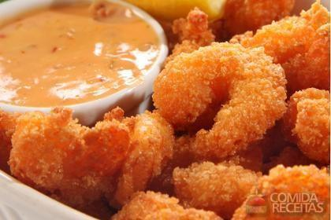

homepage
Learn how to make crispy Milanese Shrimp

But what is Milanese Shrimp?
Milanese shrimp. What else is there to say? A favourite of my friend M's, they are the perfect goodness of the shrimp, which even plain is perfectly palatable, with crispy, egg and flour based fried covering. An absolute must-have in anyone's culinary bucket list.
What you will need:
- 250g of medium sized shrimps without skin
- 1/2 a teacup of white wine
- 2 spoons of olive oil
- 2 garlic cloves
- salt ice
- 1/2 teacup of white flour
- 1 teacup of breadcrumbs
- 2 beaten eggs
- frying oil
- parsley
How you will make it:
- season the shrimp with wine, olive oil, garlic and salt.
-
- pour the flour in a deep dish, the breadcrumbs in another, and the eggs in another one
- bread the shrimps, passing them through the flour, and eggs and then the breadcrumbs
- heat the frying oil on a frying pan and fry the shrimp
- dry them on papel towels to remove the oil excess
- decorate with parsley
- eat them all
previous recipe